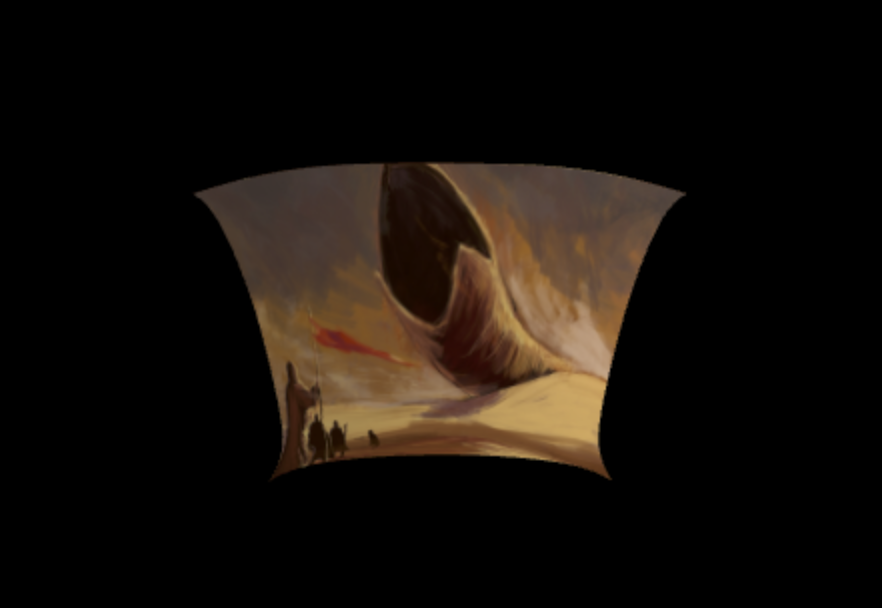
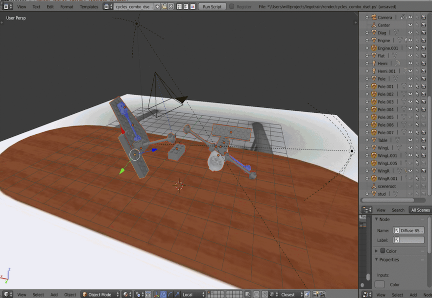

Will Snyder
I recently graduated from UMD: College Park with a BS in CS. Please have a look at some of the projects I've been working on lately! I love learning new things from the ground up and have solid foundations in low-level 3D graphics, game/VR development with Unity, and deep learning.
Resume Github
Games/VR


Shaders/Rendering



Deep Learning

Are there serious efforts to offload CPU raycasting to RT cores on capable RTX GPUs? If your game has a focus on AI and requirs tons of visibility raycast queries, would it be worth it to send those queries to the GPU in compute shaders asynchronously? Another example would be find detail collision in VR games. When walking up to the walls of a cave, collision needs to be accurate for the most minute portrusions and curves. The player's hand can directly collide with them in unpredictable ways while being observed at very close range. Is it worth creating so many colliders for such detail? One could use a static acceleration structure and raycast along the hand's motion vectors on GPU, assuming the VR graphics load isn't prohibitive. In general, hardware accelerated ray queries seem valuable to way than just graphics.
The HoloLens spatial mapping system creates a rather clumsy mesh of the room. Clumsy not in that it's inaccurate, but in that it creates too much geometry. I dont need a mess of triangles to represent a rectangular table with nothing on it, I only need 12, practically only 2. The HoloLens 2 seems to have built in DL capabilities for semantic object recognition, but would a "shape classifier" operating on the spatial map be better? I'd be interested in seeing a graph-based approach to filtering spatial maps into basic primitive shapes with assistance from CNNs producing semantic analysis of the room.
Implementing a deep-learned graphics upscaler a la nvidia's DLSS. The tensorflow graphics library could be used to render a layer of semantic information to assist the DLSS post-process. This library seems esoteric as of now, but the premise of "differentiable rendering" peaks my interest.
Porting this style transfer post-process to a custom engine built around the concept of style transfer as a non-total process. Individual materials or entities could be rendered to separate layers which would be fed into style transferers, instead of a complete transformation of the frame. Such an engine would require a capable rig and an even lighter version of Google's mobile ST model.